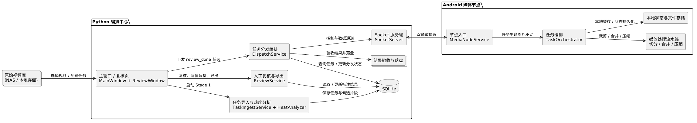
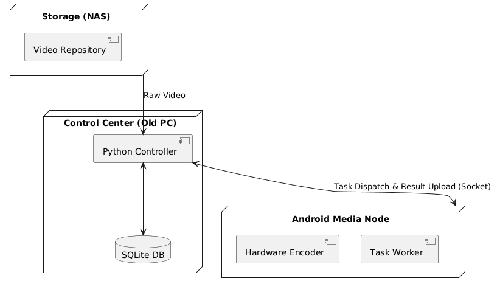
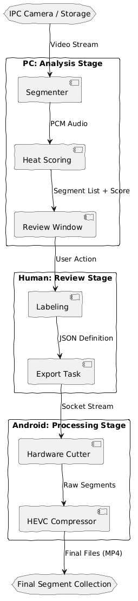
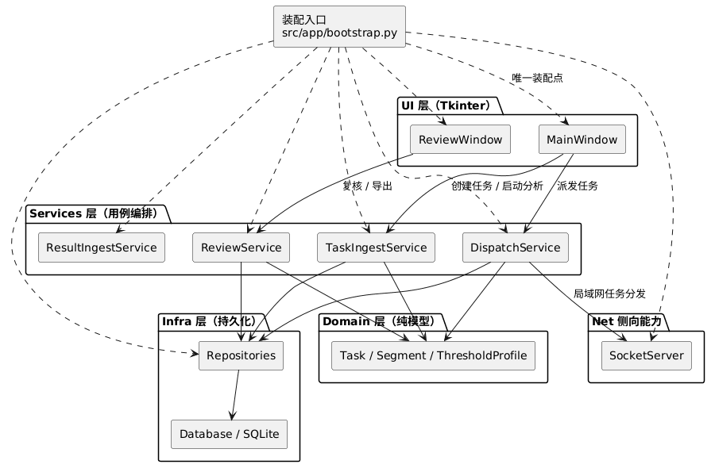
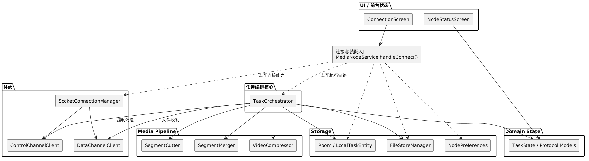
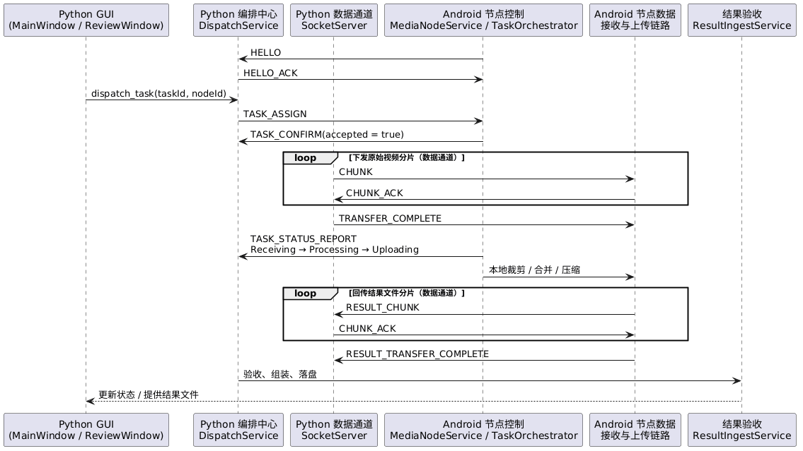

好玩系列：用20元实现快乐保存器
前言
那些琉璃般透亮的时刻——孩子嘴角突然漾开的弧度，爱人睫毛垂下的温柔阴影，瓷盏边沿阳光跌碎的金屑——在人心的流沙上，往往只驻留一霎。
彩云会散，流沙终逝。某个寻常的午后，我竟在时光的褶皱里，重逢了一串三年前清亮如初的笑声——它被妥帖地安放在岁月深处，像一枚被琥珀凝住的晨光，在记忆的枝头，开成了不落的花。
手机如同电灯泡
不失风趣，我并不像抖音上所说的那样，头上长着摄像头，而有意识的使用手机记录生活，这种目的性会使我无法全身心投入其中。
手机就如同电灯泡，在陪伴孩子的过程中，它总是一个搅局者。即便我的反应再快，也无法在快乐时光来临前抢先掏出手机进行记录。
好在家中安装了摄像头，可以全天候记录音视频，它不打扰现场，不会因为“开始记录”而改变人的状态；
懒惰是生物的共性
摄像头给我的不是一个 30 秒的高光片段，而是成小时的视频。快乐时刻当然藏在里面，但它们像撒在整条时间轴上的亮点：密度不高、位置不固定、靠人工翻会非常累。
而人一般是懒惰的生物，至少我是这样，当已经积累了数周的视频后，即便我仍然记得事件发生的大致时间，也难以驱动自己花费数小时的时间进行视频的回顾、剪辑操作。
The System
一念起而风生
显而易见，我需要一个系统！一个能自动运行/简单点击就能处理80%任务的系统！
作为一个程序员，手搓一个系统是理所应当的事情。于是我先盘点一下手上的资源：
- 一个摄像头，可以录制音视频
- 一台旧电脑，非常老的电脑，i74720HQ + GTX960M + 16GB内存 + 1.5T SSD，平时用来写文章、看视频、下载、轻量编程
- 一台 Jetson orin nano 4GB统一内存+ 256GB SSD
- 一台闲置Android手机，高通骁龙870芯片 + 12GB内存 + 256GB存储
- 一台群辉NAS
- 一台家用路由器，因为nano和手机的无线网卡带宽大约是300 Mb/s ,家用路由器一般都在千兆往上绰绰有余
系统设计雏形
我一开始跟随思维惯性，想从视频直接入手：做人脸识别、表情识别、动作检测，最好再把“谁在和谁互动”一并建模，随即我就否决了这一想法。
显而易见，这是并不富裕的一仗！理由如下：
- 电脑的CPU和显卡太差，只能胜任简单任务，诸如：流畅播放视频（1080P）,带动一个轻量级计算型服务，硬件编码能力过差，不能胜任视频处理
- NANO只能带动简单的视觉模态分析，进行人物识别和追踪，更复杂的动作语义解析难以胜任
于是我重新思考这一问题：快乐的表现（特征）是什么？尤其是儿童！
手舞足蹈、前仰后合、花枝乱颤、奔跑跳跃..., 这些都是视觉层面的动作特征，但伴随着这些动作，总会有声音出现！并且此时声音具有如下特征：
- 音量突然变大
- 语速变快
- 声调升高
- 持续的元音，如哈哈哈哈、啊啊啊啊
- 节奏型的尖叫、爆发音
因此，我将问题定义为：在连续输入的音频中，找到具备“快乐”特征的片段；
进一步的，可以将问题升级为：在连续输入的音频中，分辨出不同的成分（分离），识别特定人物，从特定人物的音频中，找到具备“快乐”特征的片段；
作者按，在让AI辅助检查内容时，它给了我一个内容修订建议，将问题定义为：在连续的音频流中，通过多维特征融合，挖掘具备“情绪热度”的候选片段。
看起来很学术化，也很不接地气。记录于此处聊做趣谈。
翻一翻我们的工具箱，我们有以下工具可以用于构建雏形方案
1. 能量特征：RMS (均方根)
核心概念：RMS 反映了信号的平均功率，相比峰值振幅，它更接近人耳感知的“音量大小”。
- 工程价值：它是识别“热闹”片段的基准，也是静音检测和能量归一化的核心指标。
- 面对的问题：真实环境中的信噪比（如风扇声、白噪音）会抬高基准线，而拍摄设备的自动增益控制（AGC）会压缩动态范围。因此，我们需要引入混合归一化策略。
2. 频率变化：ZCR (过零率)
核心概念：信号波形穿过零电平的速率。
- 工程价值：用于区分清音与浊音。在情绪检测中，语速变快、爆发性的尖叫或大笑往往伴随着 ZCR 的显著上升。
- 面对的问题：硬件录制带来的直流偏移（DC Offset）会使计数失真，预处理时的高通滤波必不可少。
3. 时序突变：Onset Strength (起始点强度)
核心概念：频谱通量或能量斜率的瞬时增加。
- 工程价值：捕捉笑声、拍手声等“声学事件”的爆发点。
- 面对的问题：要过滤软起首的缓慢噪声，并识别孤立的突发干扰（如掉落物），结合时序规整逻辑。
4. 听觉色调：Spectral Centroid (频谱质心)
核心概念：频谱分布的“重心”，决定了听感的“明亮度”。
- 工程价值：高亢、尖锐、清脆的声音（如儿童的笑闹）质心较高。
- 面对的问题：环境回声（混响）会导致频谱分布散乱，且 FFT 变换对 CPU 有一定压力，需要窗口跳跃策略。
核心方案整合：HeatAnalyzer
有了上述四个维度的特征识别方案，我们的核心任务就变成了将这些离散的“刻度”融合成一条连续、有温度的“热度曲线”。我将其分为三个阶段：
1. 多维加权与特征融合 (Base Score)
我并没有进行简单的平均，而是根据经验赋予了不同的权重，构建出 base_score：
- RMS (22%) + ZCR (12%)：保住基本的“能量感”与“活泼度”；
- Onset (14%)：捕捉瞬间的爆发力；
- Spectral Centroid (18%)：锁定声音的“明亮度”；
- Pitch Level (20%) & Stability (14%)：识别那些稳定、高亢的情绪表达。
作者按：没有一成不变的算法模型，我们在按照经验确定参数后，需要依旧实际问题，进行模型参数评估，微调，并时刻注意：“测试过拟合、实际低鲁棒”的问题出现
2. “快乐”加成与情感补偿 (Bonus Logic)
为了让算法更贴合人类对“快乐”的直觉，我们引入了一系列触发式的 Bonus 逻辑：
- 持续元音补偿：当检测到类似“哈哈哈”或“啊——”的长时持续元音时，给予显著权重提升。
- 高音奖励：当音高（Pitch）显著高于该人物的平均水位时，判定为兴奋状态。
- 节奏上升：通过检测 Onset 的密度变化，感知情绪正在从平静向热烈“爬升”。
3. 从离散采样到直观曲线 (Post-processing)
算法输出的原始分段往往是细碎且跳跃的，直接给用户看会非常“抖”。我们通过三层后处理进行规整：
- 平滑（Smooth）：消除采样误差带来的随机噪声。
- 上下文增强（Contextual Adjustment）：如果一段视频前后都很热，算法会智能“填平”中间短暂的低谷。
- 时序规整（Temporal Regularize）：合并相邻的短片段，剔除孤立的尖刺，确保候选片段具有观看价值。
不难发现，这套方案可能发现“快乐”，但不太可能界定是谁快乐
作者按：算法类问题和编程类问题不同，在没有走出一步之前，很难断定是否会失败，因此只要方案具备扩展性，就不必立即引入新问题，而是在具备初步结果后再评估，也许这条路走不通呢 而编程问题，技术相对成熟，在开始验证前就可以建立测度进行评估，预测是否能成功，可以相对大胆的引入新问题一同分析并设计
架构方案雏形
在明确了算法核心后，我们需要一套架构将“散落”在硬盘里的视频、运行在旧电脑里的算法，以及闲置的移动算力有机结合起来。由于算力资源极度不对称（老旧电脑 GPU 弱、编码差；Android 手机端 NPU/VPU 编解码强），我们将系统设计为**“任务编排中心 + 分布式执行节点”**的拓扑结构。
1. 系统边界与组件定义
整个系统被划分为三个核心控制域：
- Ingest & Analysis Domain (Python/PC)：
TaskIngestService：系统入口，负责视频分段与任务预处理。HeatAnalyzer：分析核心，通过三层回退机制确保在各种环境下的热度值产出。
- Interaction & Review Domain (Python/Tkinter)：
ReviewService：人工复核逻辑，支持基于标签事件的消息回溯（Undo/Redo）和阈值配置集管理。
- Distributed Media Node (Android/Media3)：
MediaNodeService：高性能媒体处理节点，利用骁龙芯片的硬件编码器（如c2.qti.hevc.encoder）进行无损裁剪与 HEVC 压缩。
@startuml
left to right direction
skinparam componentStyle rectangle
package "Python 编排中心" {
[主窗口 / 复核页\nMainWindow + ReviewWindow] as UI
[任务导入与热度分析\nTaskIngestService + HeatAnalyzer] as Ingest
[人工复核与导出\nReviewService] as Review
[任务分发编排\nDispatchService] as Dispatch
[Socket 服务端\nSocketServer] as Socket
database "SQLite" as DB
collections "结果验收与落盘" as ResultStore
}
package "Android 媒体节点" {
[节点入口\nMediaNodeService] as NodeEntry
[任务编排\nTaskOrchestrator] as NodeFlow
[媒体处理流水线\n切分 / 合并 / 压缩] as MediaPipeline
[本地状态与文件存储] as NodeStorage
}
collections "原始视频库\n(NAS / 本地存储)" as VideoRepo
VideoRepo --> UI : 选择视频 / 创建任务
UI --> Ingest : 启动 Stage 1
Ingest --> DB : 保存任务与候选片段
UI --> Review : 复核、阈值调整、导出
Review --> DB : 读取 / 更新标注结果
UI --> Dispatch : 下发 review_done 任务
Dispatch --> Socket : 控制与数据通道
Dispatch --> DB : 查询任务 / 更新分发状态
Socket <--> NodeEntry : 双通道协议
NodeEntry --> NodeFlow : 任务生命周期驱动
NodeFlow --> MediaPipeline : 裁剪 / 合并 / 压缩
NodeFlow --> NodeStorage : 本地缓存 / 状态持久化
Dispatch --> ResultStore : 验收结果并落盘
@enduml

2. 部署拓扑结构
系统的物理部署呈现以 PC 为中心的放射状拓扑，利用家用局域网进行数据交换：
@startuml
node "Control Center (Old PC)" {
component "Python Controller" as PC
database "SQLite DB" as DB
PC <--> DB
}
node "Storage (NAS)" as NAS {
[Video Repository]
}
node "Android Media Node" as Phone {
[Hardware Encoder]
[Task Worker]
}
NAS --> PC : Raw Video
PC <--> Phone : Task Dispatch & Result Upload (Socket)
@enduml

3. 核心数据流向
从原始视频输入到最终“快乐片段”落盘，数据经历了一次从“海量冗余”到“高价值压缩”的转换：
@startuml
!option handwritten true
storage "IPC Camera / Storage" as Source
storage "Final Segment Collection" as Sink
rectangle "PC: Analysis Stage" {
Source --> [Segmenter] : Video Stream
[Segmenter] --> [Heat Scoring] : PCM Audio
[Heat Scoring] --> [Review Window] : Segment List + Score
}
rectangle "Human: Review Stage" {
[Review Window] --> [Labeling] : User Action
[Labeling] --> [Export Task] : JSON Definition
}
rectangle "Android: Processing Stage" {
[Export Task] --> [Hardware Cutter] : Socket Stream
[Hardware Cutter] --> [HEVC Compressor] : Raw Segments
[HEVC Compressor] --> Sink : Final Files (MP4)
}
@enduml

4. 子系统架构图
Python 桌面端架构
@startuml
top to bottom direction
skinparam componentStyle rectangle
[装配入口\nsrc/app/bootstrap.py] as Bootstrap
package "UI 层（Tkinter）" {
[MainWindow] as MainWindow
[ReviewWindow] as ReviewWindow
}
package "Services 层（用例编排）" {
[TaskIngestService] as TaskIngestService
[ReviewService] as ReviewService
[DispatchService] as DispatchService
[ResultIngestService] as ResultIngestService
}
package "Domain 层（纯模型）" {
[Task / Segment / ThresholdProfile] as DomainModels
}
package "Infra 层（持久化）" {
[Repositories] as Repositories
[Database / SQLite] as Database
}
package "Net 侧向能力" {
[SocketServer] as SocketServer
}
Bootstrap ..> MainWindow : 唯一装配点
Bootstrap ..> ReviewWindow
Bootstrap ..> TaskIngestService
Bootstrap ..> ReviewService
Bootstrap ..> DispatchService
Bootstrap ..> ResultIngestService
Bootstrap ..> Repositories
Bootstrap ..> SocketServer
MainWindow --> TaskIngestService : 创建任务 / 启动分析
MainWindow --> DispatchService : 派发任务
ReviewWindow --> ReviewService : 复核 / 导出
TaskIngestService --> DomainModels
ReviewService --> DomainModels
DispatchService --> DomainModels
TaskIngestService --> Repositories
ReviewService --> Repositories
DispatchService --> Repositories
Repositories --> Database
DispatchService --> SocketServer : 局域网任务分发
@enduml

Android 媒体节点架构
@startuml
top to bottom direction
skinparam componentStyle rectangle
[连接与装配入口\nMediaNodeService.handleConnect()] as ServiceEntry
package "UI / 前台状态" {
[ConnectionScreen] as ConnectionScreen
[NodeStatusScreen] as NodeStatusScreen
}
package "任务编排核心" {
[TaskOrchestrator] as TaskOrchestrator
}
package "Net" {
[ControlChannelClient] as ControlChannelClient
[DataChannelClient] as DataChannelClient
[SocketConnectionManager] as SocketConnectionManager
}
package "Media Pipeline" {
[SegmentCutter] as SegmentCutter
[SegmentMerger] as SegmentMerger
[VideoCompressor] as VideoCompressor
}
package "Storage" {
[Room / LocalTaskEntity] as LocalTaskStore
[FileStoreManager] as FileStoreManager
[NodePreferences] as NodePreferences
}
package "Domain State" {
[TaskState / Protocol Models] as NodeDomainState
}
ServiceEntry ..> SocketConnectionManager : 装配连接能力
ServiceEntry ..> TaskOrchestrator : 装配执行链路
ServiceEntry ..> LocalTaskStore
ServiceEntry ..> FileStoreManager
ServiceEntry ..> NodePreferences
ConnectionScreen --> ServiceEntry
NodeStatusScreen --> NodeDomainState
TaskOrchestrator --> ControlChannelClient : 控制消息
TaskOrchestrator --> DataChannelClient : 文件收发
TaskOrchestrator --> SegmentCutter
TaskOrchestrator --> SegmentMerger
TaskOrchestrator --> VideoCompressor
TaskOrchestrator --> LocalTaskStore
TaskOrchestrator --> FileStoreManager
TaskOrchestrator --> NodeDomainState
SocketConnectionManager --> ControlChannelClient
SocketConnectionManager --> DataChannelClient
@enduml

5. 通信图
Python 端与 Android 端交互的通信设计：
@startuml
participant "Python GUI\n(MainWindow / ReviewWindow)" as GUI
participant "Python 编排中心\nDispatchService" as PC_CTRL
participant "Python 数据通道\nSocketServer" as PC_DATA
participant "Android 节点控制\nMediaNodeService / TaskOrchestrator" as NODE_CTRL
participant "Android 节点数据\n接收与上传链路" as NODE_DATA
participant "结果验收\nResultIngestService" as INGEST
NODE_CTRL -> PC_CTRL : HELLO
PC_CTRL -> NODE_CTRL : HELLO_ACK
GUI -> PC_CTRL : dispatch_task(taskId, nodeId)
PC_CTRL -> NODE_CTRL : TASK_ASSIGN
NODE_CTRL -> PC_CTRL : TASK_CONFIRM(accepted = true)
loop 下发原始视频分片（数据通道）
PC_DATA -> NODE_DATA : CHUNK
NODE_DATA -> PC_DATA : CHUNK_ACK
end
PC_DATA -> NODE_DATA : TRANSFER_COMPLETE
NODE_CTRL -> PC_CTRL : TASK_STATUS_REPORT\nReceiving → Processing → Uploading
NODE_CTRL -> NODE_DATA : 本地裁剪 / 合并 / 压缩
loop 回传结果文件分片（数据通道）
NODE_DATA -> PC_DATA : RESULT_CHUNK
PC_DATA -> NODE_DATA : CHUNK_ACK
end
NODE_DATA -> PC_DATA : RESULT_TRANSFER_COMPLETE
PC_CTRL -> INGEST : 验收、组装、落盘
INGEST --> GUI : 更新状态 / 提供结果文件
@enduml

Alpha版实现并验证
此时，我们已经拥有系统与子系统概要设计，可以开始动手实现。
考虑到个人精力有限，我没有选择手搓，在完成概要设计后，我将实现交给了AI。
因为梯子不太可靠，没有固定的外网专线，不敢冒死使用Claude，于是我选择了GPT-5.3-codex 和 GPT-5.4 两个模型，分别处理Python端和Android端；
作者按：感觉一年40刀的梯子有点废了，几乎没有用武之地。
作者按：插一句题外话。当一项工作的主体是AI，并且不再有各种细节约束时，反而出奇的好用！
- 我化身用户，只要功能交付可用并且不难用，我就认可；功能不满足预期就提bug和反馈，约束自己从普通用户的角度进行信息输入，避免过度专业性；
- 在AI陷入难以解决的BUG时，我化身“专家”，只告诉它，它面临的问题，从抽象层面的模型是什么，可以考虑哪些方案，注意哪些衍生问题，只指点不插手，只协助不干预。
就好比在软件开发团队中，产品经理只把需求点和接受标准讲清楚，不插手技术实现；管理层只关注资源够不够和对接有没有打通，不从技术风险时间风险对方案进行干预，有经验的架构师/Leader 只分享经验和观点，不插手事务
在这种充分信任的环境下，AI在持续交付时表现出设计逻辑连贯性，并没有反复推倒重来。
在短短一周之内（每天投入不到3小时），AI就完成了Alpha版原型系统的开发，经过验证已经达到可进一步迭代的程度。
新问题引入与优化
假阳性问题
在测试时，确实出现了假阳性问题，比如，电视声、户外人声造成了误判。
作者按：阳台北面是小区的活动平台，经常有儿童在打球、玩滑梯，开窗后环境音可能被误判
我在方案上增加了扩展：
- 音频继续负责召回：尽量别漏掉值得看的候选；
- 视觉负责做约束：在时间范围内，离散抽取图片，检测目标人物是否在画面中；
对于视觉约束，不要尝试fancy的算法，不要尝试自己训练一个CNN再量化，基于YOLOv8进行目标检测就可以解决80%的问题。
因为家庭场景单一，相机部署位置和拍摄角度固定，活动范围有限，对几个典型位置的人物框体高度进行阈值界定，即可区分成人和儿童，进而形成分数梯度。
经TensorRT INT8量化优化，可以在NANO上流畅运行。
热度被抑制、鞍点
虽然摄像头已经按小时进行分段，但因为活动场景，某些时段下就会出现嘈杂的声音（例如午饭时间），将整段视频的基线拉高，目标片段热度被抑制。
在Beta版的优化中，我将特定时段的视频，进一步切分成5分钟的片段进行处理；
作息中的玩耍时间段，采用滑动窗口切分和不同时段拼接的方式，让一段时间能够出现在多个窗口中进行计算
举个例子，窗口1小时，每步滑动5分钟，那么一段时间会出现在12个窗口中进行计算，这样可以避免一通电话导致一小时的视频热度都被压扁。在Beta版中实测并不需要这么密集，20分钟的移动步长都已经足够好。
某一段（例如下午2点）中的高热度，可以和1点、3点、4点的平均热度片段合并，再次进行计算，判断是否值得召回，如果值得召回，它应当也是高热度片段。
识别目标人物
截至此时，我们仍未引入声纹识别，未判断快来的来源。但当我拿到Alpha版和Beta版的结果时，我已经不再纠结这个问题。
因为我发现：即便不区分是谁在发声，热度算法也能召回很多精彩片段。即便有误召，但它们并不至于让人觉得“垃圾”，反而带来一些意外的惊喜。
emm，坦诚的说，这属于垃圾产品经理定义的垃圾需求，即使真的做完了也会发现没用。
流程自动化
当Beta版稳定后，我对系统进行了一次迭代，固化了参数，诸如：热度阈值，不同时段的切分窗口长度，窗口滑动的步长，忽略时段等；
整套工作流可以自动运行，在自动派单和supervisor机制下，设备就绪就能自动干活。
难以优化的问题
除了摄像头视频，我使用谍影重重电影进行了测试，特工伏击伯恩和Nicky时的片段中，摩托车追击和警方行动的片段都被召回了，但特工狙击Nicky的片段却没有被召回，因为场景音频不符合特征。
所以小孩在自己玩鬼把戏，静悄悄的在作妖的片段，或者我们玩躲猫猫的时候，从音频特征出发也是无法召回的！
作者按：选择谍影重重的原因是，前段时间刚温习过，剧情较熟，精彩片段的音频特征和本场景类似
后记
工程师的傲慢
一个工程师在成长为牛逼的工程师的过程中，自然的会养成一种傲慢：
- 我很牛逼
- 我思考的结果是正确的
- 你个小辣鸡这都想不到吗
- ...
然而，用户居然具有如此之大的包容性！
工程师觉得烂到家的东西，用户却觉得够用了、真的够用了；
工程师觉得一定要做到极致的东西，用户却从不使用；
AI时代
这是最好的时代，也是最坏的时代；
随着AI的兴起，个人+AI 的能力远远突破了 个人 的边界，让个人可以处理“团队量级的事务”，降低事务的处理门槛。
例如：在三年前，我一定不会做这件事情，因为投入1-2个月的个人时间也难以获得一丁点可验证成果，因为缺乏VTA-NAc通路的正向反馈，下丘脑会不断使用递质来暗示否决项目。
作者按：VTA-NAc通路 （中脑腹侧被盖区-伏隔核多巴胺能通路）是大脑中一个重要的奖励系统，负责处理奖励、动机和愉悦感。 当我们完成一项任务或实现一个目标时，这个通路会释放多巴胺，让我们感到满足和快乐。这种正向反馈机制是人类行为的重要驱动力之一。 使用DBS技术，对伏隔核进行电刺激，可治疗药物成瘾。
又例如：在五年前，至少拥有两年开发经验，掌握Jetpack-Compose、Coroutine、Media Codec等技术栈的工程师，才敢于尝试在Android系统上实现视频处理节点； 而现在，一个软件相关专业的学生加上AI，就敢于“干中学”了
而AI的能力之强，也会让人充满惰性，对着输入框发出指令，就能得到结果，随着结果可靠性越来越高，人会“降智、变懒”。
举个例子：Total = A+B； 原先 A=80、B=0；总分80；随着AI出现，变成 A=80、B=80，你很开心，因为总分160了，但对你的期待还停留在100；逐渐变成了A=40、B=80，你还是很开心，因为120>100...
因此，我仅开放Alpha阶段的原型源码，以便读者诸君自己动手时进行参考对照，毕竟这么长的文章，大部分人都用AI进行总结了，更不必谈亲自阅读代码了。
20元的由来
全套设备没有额外采购，使用了Copilot一个月大约30%的额度（约3美元，折合RMB约20元），电费忽略不计，个人时间不计价。